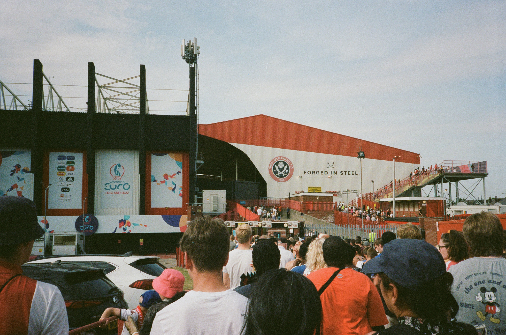

home
mathematics
gallery
miscellany
Pieces that are not mathematics and not photographs.

Six selected stadiums
Six football stadiums I have stood in, what I actually watched, and what each of them has seen.
August 2026
×
Things I like about Naples
Here’s my list after three years. It’s not a definitive guide, just the spots I actually go back to.
Italy
×